Toda la fibra es el sensor.
Monitoreo continuo en tiempo real y sin puntos ciegos.
Con detección acústica distribuida (DAS), transformamos cualquier cable de fibra óptica en miles de sensores que escuchan vibraciones en tiempo real. Sin puntos ciegos, sin electrónica en terreno, sin mantenimiento. Ya probamos esta tecnología en un volcán activo y en más de 60 km de mineroducto en operación. Ahora la llevamos a la infraestructura crítica de Chile.
Cero zonas ciegas de monitoreo
Un sensor virtual cada pocos metros: cientos o miles por cable
Hasta 130 km por interrogador, en dos fibras de 65 km
Solo fibra pasiva, cero baterías
Verónica Gaete Elgueta
Licenciada en Física (PUCV), Magíster en Física (Universidad de Chile) y candidata a doctora en Earth and Space Sciences (University of Washington, EE.UU.). Se especializa en geofísica y Detección Acústica Distribuida (DAS), con foco en sismología volcánica y de subducción. Ha liderado experimentos DAS en Chile y está a cargo del procesamiento y modelamiento de los datos sísmicos.
José Estay Herrera
Geólogo y Magíster en Ciencias mención Geología (Universidad de Chile). Especialista en peligros geológicos, riesgo sísmico andino y modelación numérica. Más de 7 años de experiencia en consultoría geológica. Define dónde y cómo instalar la fibra según la geología de cada sitio, y lidera el diseño de pilotos junto a cada empresa.
Lo que ya hemos medido: Ciencia de frontera llevada al terreno
Antes de prometer despliegues comerciales masivos, nuestro equipo ha probado y validado la física de la detección óptica distribuida en algunos de los entornos geológicos e industriales más exigentes del país y del mundo:
Mineroducto Industrial
Análisis acústico continuo sobre más de 60 km de fibra óptica a lo largo del trazado de un mineroducto industrial en operación. Captura simultánea de variables dinámicas internas y externas.
- Sismicidad natural regional: registro de eventos sísmicos a lo largo del trazado sin sensores discretos dedicados.
- Reflexiones estructurales: identificación de puntos críticos y singularidades geométricas en el ducto.
- Monitoreo de flujo de pulpa: caracterización acústica del ruido interno generado por el transporte continuo de mineral.
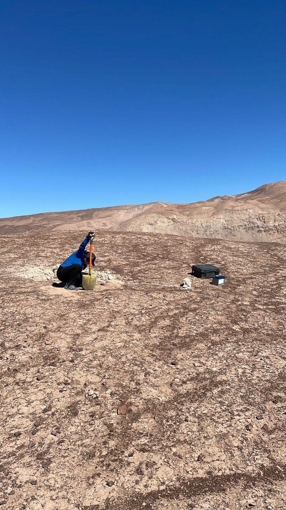
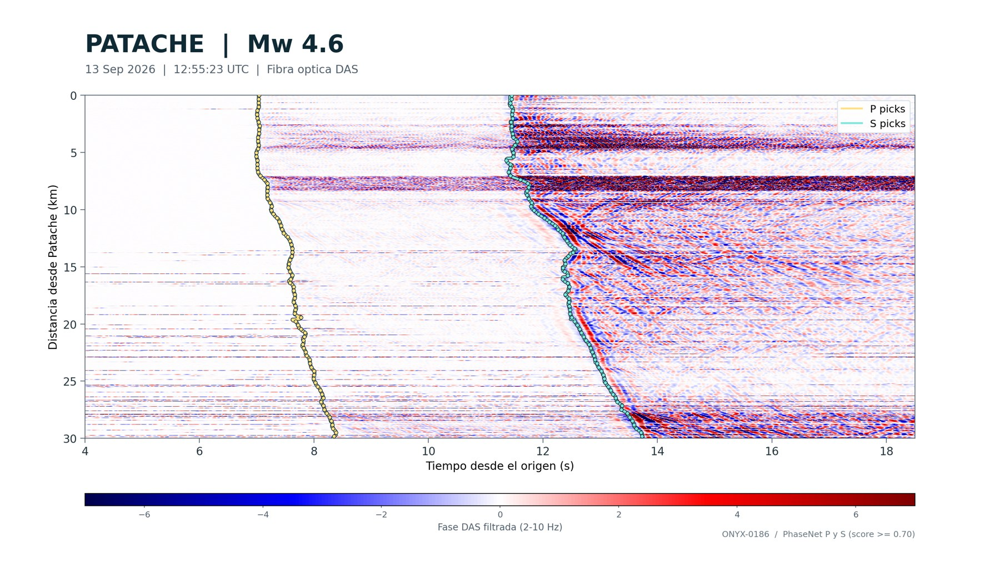
Ondas P y S de un sismo registradas por la fibra del mineroducto, en sus primeros 30 km desde Patache. Las curvas marcan la llegada de cada onda, detectada automáticamente con PhaseNet, una red neuronal de picado sísmico.
Hipocentro según el CSN: 8 km al NO de Patache, 39 km de profundidad. Ver informe oficial →
Volcán Cordón Caulle
Tendido experimental de ~2 km de cable de fibra óptica enterrado manualmente en superficie. Mediante tomografía de ruido sísmico ambiental, logramos caracterizar el subsuelo volcánico activo sin fuentes artificiales de energía.
- Perfil 2D continuo de velocidades del subsuelo alcanzando hasta 700 metros de profundidad efectiva.
- Detección multievento de microsismicidad volcánica local de baja y media frecuencia.
- Firmas hidrotermales: registro de eventos microsísmicos asociados a procesos de desgasificación activa.
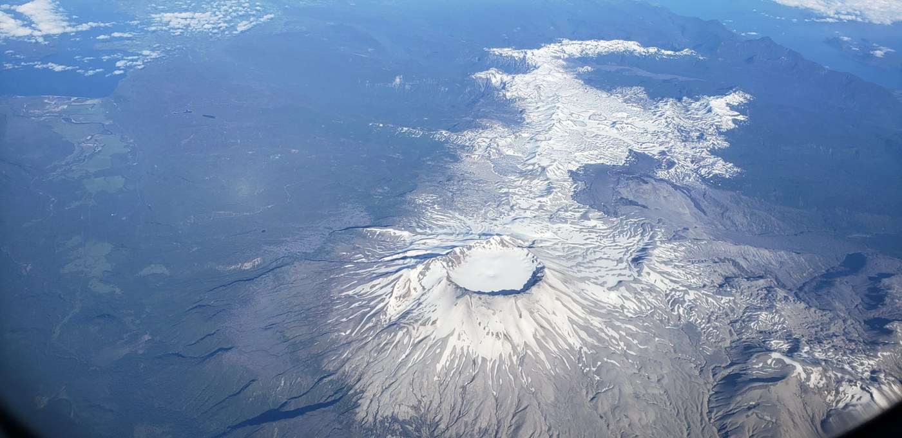
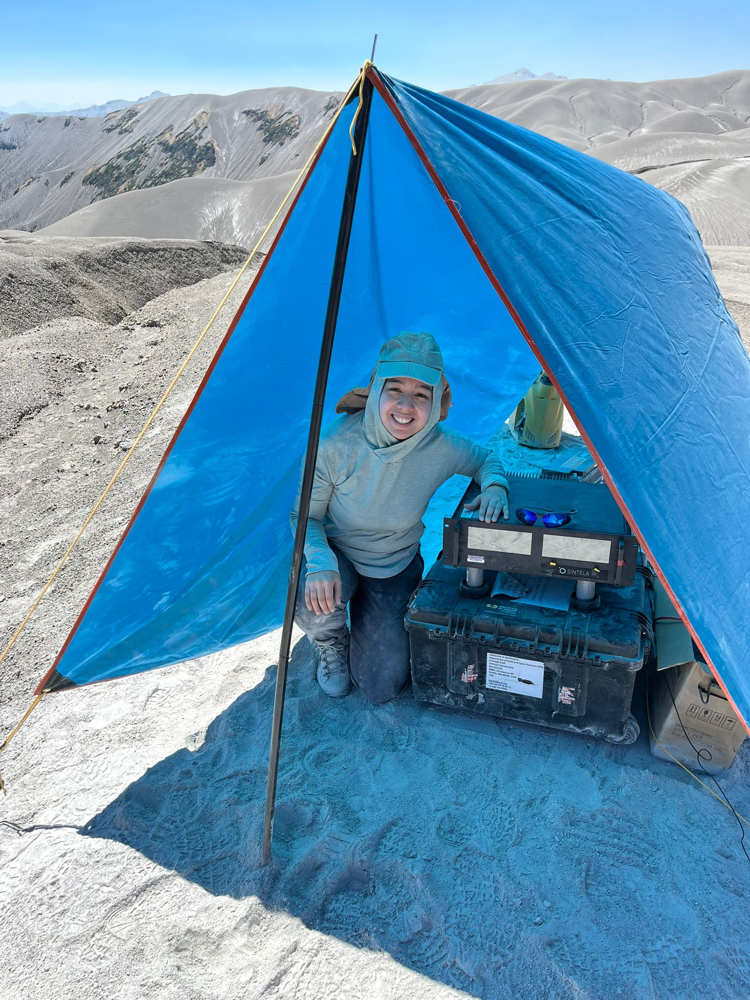
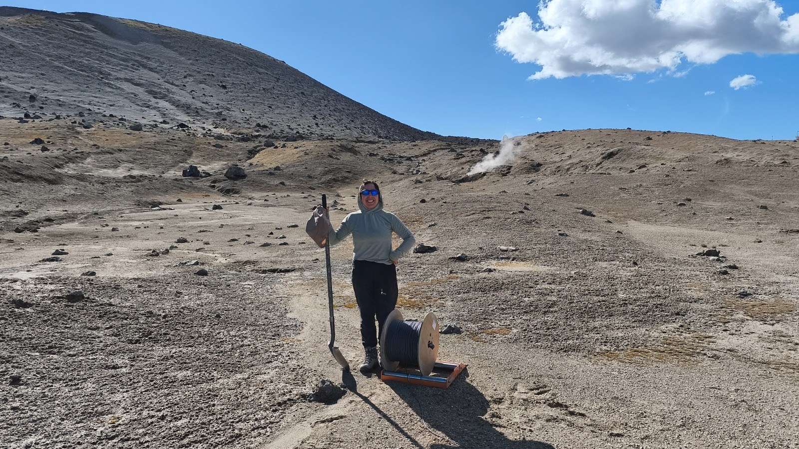
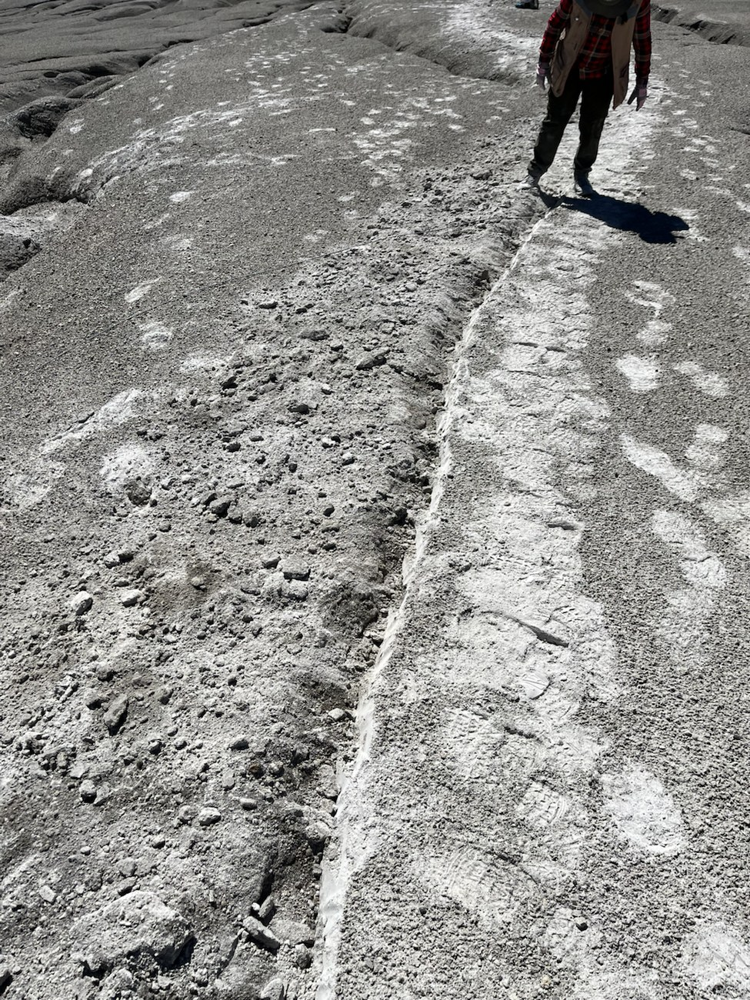
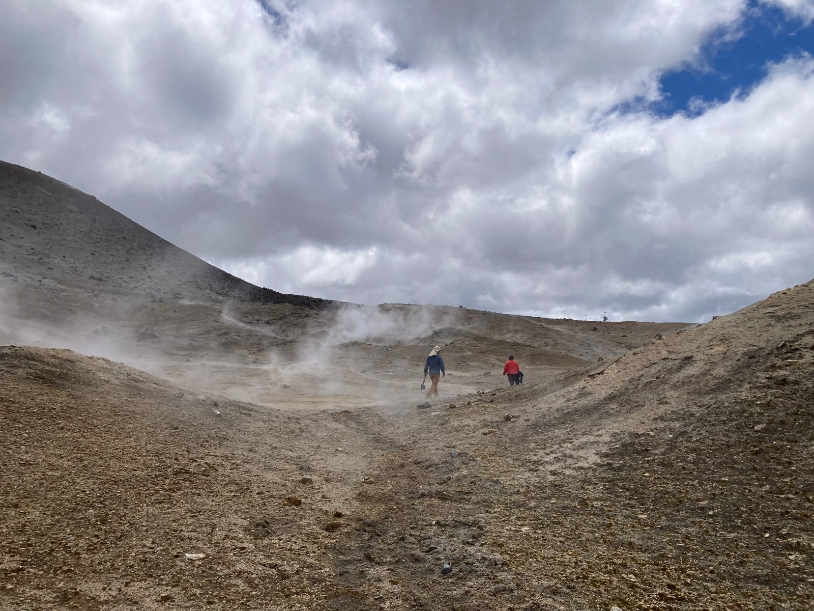
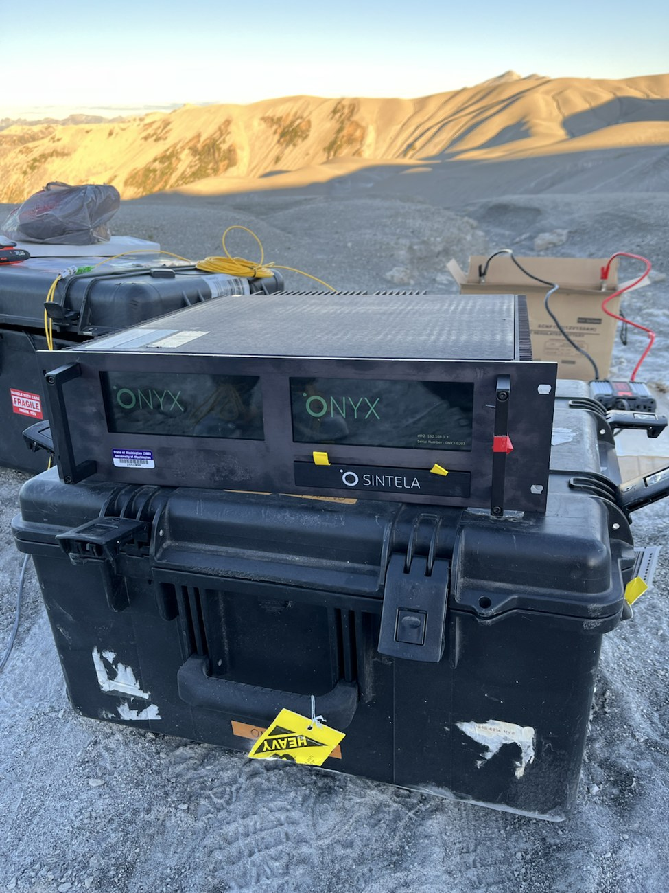
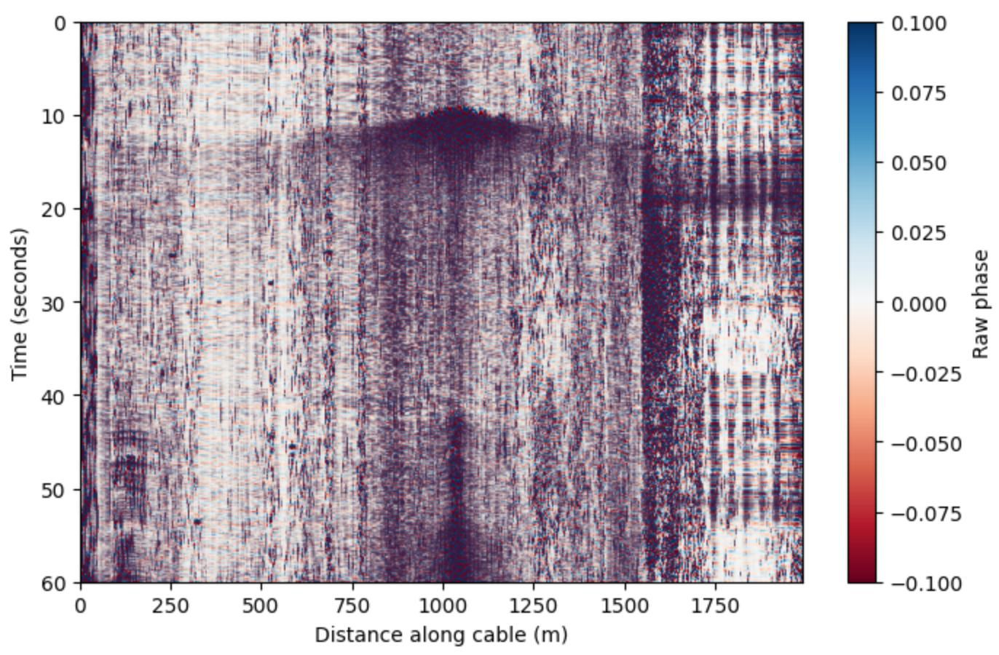
Evento de emanación de gases registrado por la fibra enterrada. La señal aparece primero en el tramo más cercano a la fuente, cerca del metro 1.000 del cable, y luego se extiende a lo largo de la fibra.
Yellowstone, EE.UU.
Participación en un despliegue DAS en ambiente volcánico e hidrotermal junto a la University of Washington (abril 2026).
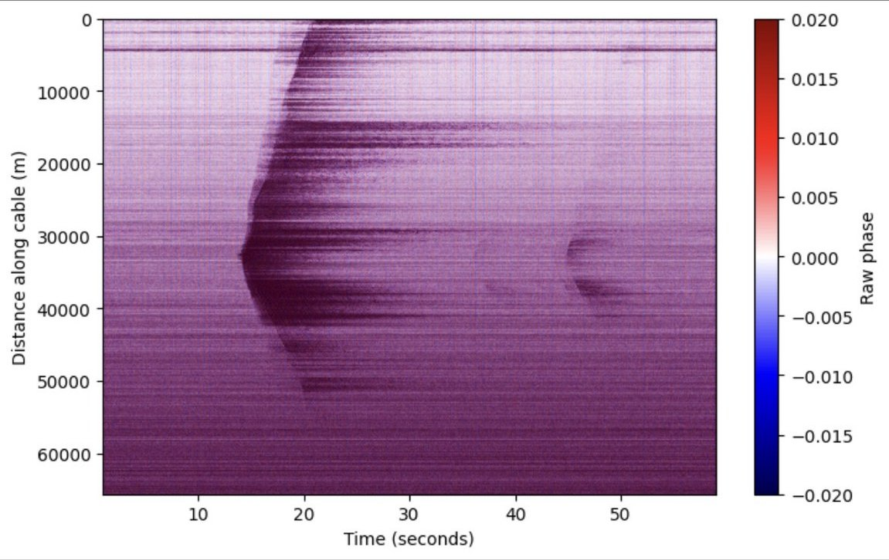
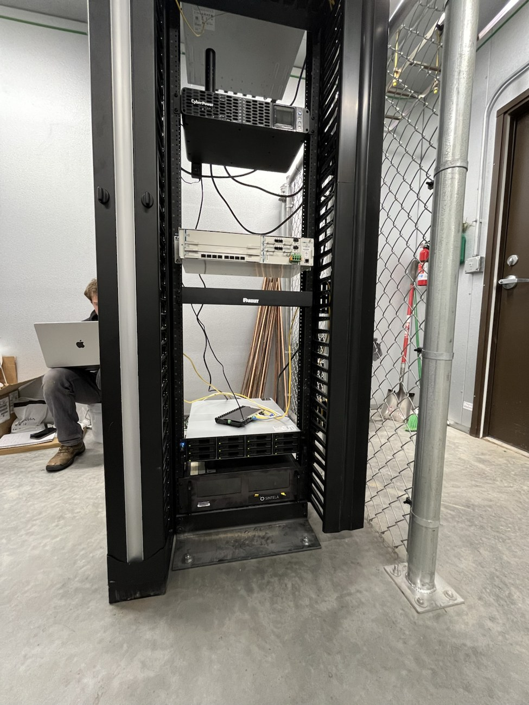
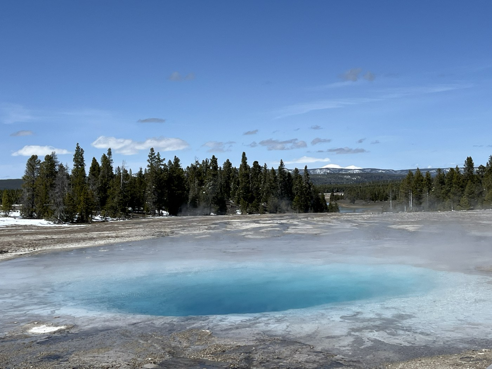
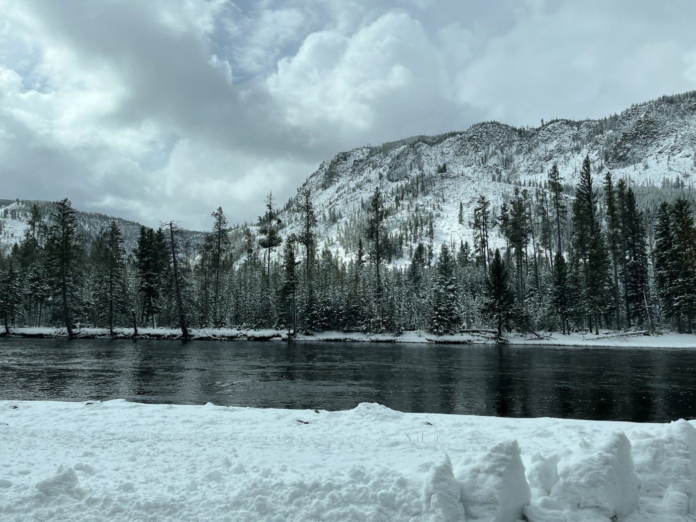
Aplicaciones: dónde la fibra se convierte en sensor
Buscamos empresas mineras, de energía, sanitarias y de transporte, junto a sus gerencias de innovación, para desplegar pruebas de concepto de detección distribuida que resuelvan sus necesidades de vigilancia, monitoreo y alerta temprana, adaptándonos a la geometría y geología de cada sitio:
Microsismicidad mejor detectada y localizada, en toda la faena
Las redes de geófonos tienen pocos puntos de medición y dejan zonas sin cubrir. Una fibra agrega cientos o miles de canales en galerías, sondajes o bermas, incluso donde no se puede instalar electrónica.
- Microsismicidad: más canales cerca de la fuente registran eventos de menor magnitud y reducen la incertidumbre en la ubicación de cada hipocentro.
- Taludes y relaves: caída de rocas y vigilancia sísmica continua de muros, en zonas extensas o de difícil acceso.
- Caracterización del macizo (estudios de detalle): tomografía sísmica para detectar zonas de baja velocidad o huecos, como muestran Abukrat y Reshef (2021) y Liu et al. (2025), y perfiles sísmicos en sondajes (VSP).
Vigilancia continua de cables eléctricos, gasoductos y presas
La fibra que acompaña a un cable de poder o a un ducto se convierte en un sensor a lo largo de todo su trazado, sin instalar equipos en terreno.
- Líneas y cables eléctricos: con la fibra OPGW de las líneas aéreas o la que acompaña a cables soterrados, se localizan fallas, intervención de terceros, oscilación de conductores por viento y acumulación de hielo.
- Gasoductos y oleoductos: fugas, intervención de terceros y seguimiento del PIG.
- Presas y geotermia: vigilancia sísmica de presas y microsismicidad en campos geotérmicos.
Redes de agua y monitoreo del océano
En un país con escasez hídrica, cada fuga cuenta. DAS escucha la tubería completa y ubica el punto donde algo cambió.
- Acueductos y tuberías: detección y localización de fugas e intervención de terceros.
- Embalses y presas: vigilancia sísmica continua de muros y laderas.
- Océano: los cables submarinos de telecomunicaciones funcionan como hidrófonos de decenas de kilómetros para registrar ballenas, tráfico de barcos y oleaje (Xenaki et al., 2025).
Ductos, vías y estructuras bajo vigilancia continua
Los cables de comunicaciones que ya recorren ductos, vías y carreteras pueden convertirse en sensores sin detener la operación.
- Mineroductos: flujo de pulpa y anomalías a lo largo del trazado.
- Ferrocarriles y carreteras: seguimiento de trenes y tráfico, clasificación de vehículos, anomalías en la vía e intrusión.
- Puentes, túneles y edificios: vibración de puentes, desprendimientos en túneles y monitoreo de cómo responden las estructuras ante un sismo.
Sismos, volcanes y deslizamientos vigilados con fibra óptica
Chile es uno de los países más sísmicos y volcánicos del mundo. Con DAS, la fibra óptica que ya existe, incluida la fibra oscura de telecomunicaciones, se convierte en una red densa de sensores para vigilar peligros geológicos.
- Sismos: ondas P y S a lo largo de decenas de kilómetros de fibra, como el sismo Mw 4.6 registrado en Patache.
- Volcanes y deslizamientos: microsismicidad y emanación de gases, como en el Cordón Caulle, y alerta temprana de remociones en masa.
- Suelos: perfiles de velocidad de onda S (Vs30) para la clasificación sísmica del suelo.
Ecosistema de Colaboración de Clase Mundial
Nuestra propuesta técnica se apoya en colaboraciones de investigación internacional de frontera, faenas mineras líderes y el principal centro de sismología del país:
Proyecto CHILCO (NSF-FRES)
Iniciativa internacional de investigación financiada por la National Science Foundation (EE.UU.) sobre volcanismo y dinámica de la corteza andina. Verónica lidera experimentos DAS en volcanes activos chilenos dentro de esta red.
Conocer proyecto CHILCO →Applied Environmental Intelligence (AEI)
Alianza tecnológica binacional con la plataforma de inteligencia ambiental basada en Seattle, Washington. Integración de datos de fibra óptica distribuida (DAS) con redes sísmicas, satelitales e Inteligencia Artificial para la toma de decisiones operacionales y gestión de peligros naturales en infraestructura crítica.
environmentintel.com →Minera Doña Inés de Collahuasi
Colaboración técnica para el acceso a datos y pruebas piloto de monitoreo acústico en mineroductos y faena minera de alta cordillera, validando el comportamiento óptico en condiciones operativas extremas.
collahuasi.cl →DGF · Universidad de Chile
Vinculación estrecha con académicos e investigadores del Departamento de Geofísica de la Universidad de Chile para la validación sismológica, modelación tomográfica y procesamiento avanzado de señales DAS.
dgf.uchile.cl →De la ciencia experimental al servicio industrial
Avanzamos con pasos firmes y fundamentados en datos reales para consolidar el primer servicio industrial de fibra óptica distribuida en Chile:
Consolidación de Modelos & Datos Caulle / Mineroducto
Finalización del procesamiento tomográfico del Volcán Caulle (700 m) y calibración de firmas acústicas de flujo en más de 60 km de mineroducto.
Primer Piloto Industrial en Minería
Despliegue de la primera prueba de concepto en faena minera para detección y localización de microsismicidad.
Expansión a Infraestructura & Redes Lineales
Ejecución de pruebas de campo en muros de tranques de relaves y monitoreo continuo de vías férreas y transporte de concentrados.
Plataforma de Inteligencia Sísmica y Acústica
Un interrogador genera cientos de gigabytes e incluso varios terabytes al día: revisarlos a mano es imposible. Entrenamos modelos de aprendizaje profundo para detectar, clasificar y localizar eventos en tiempo real, informados por la física de las ondas y calibrados con la geología de cada faena.
Más allá de DAS: deformación y temperatura
Incorporación de DSS y DTS para medir deformación y temperatura a lo largo de la fibra, complementando la detección de vibraciones con el seguimiento de muros, taludes, túneles y filtraciones.
Nota de Rigor Científico y Transparencia
FiberAndes es una startup chilena de base científico-tecnológica en fase de validación y co-diseño de pilotos industriales. Nuestros modelos se basan en investigaciones de campo verificables (volcanología, sismología y ductos) y en alianzas con centros de investigación de clase mundial. No ofrecemos productos genéricos “caja negra”: co-creamos soluciones de monitoreo continuo adaptadas a la geología andina de cada faena.
Co-diseña un piloto de validación con nosotros.
¿Necesitas vigilar una faena, un ducto, una línea eléctrica, una red de agua o una zona de riesgo geológico? Nuestro equipo de geólogos y geofísicos evalúa contigo si DAS es la herramienta adecuada y cómo sería un piloto.
Cómo trabajamos un piloto
- Conversamos tu caso: una reunión técnica para entender el problema y la operación.
- Revisamos fibra y sitio: vemos la fibra disponible, el acceso y la geología del lugar.
- Diseñamos el piloto: proponemos alcance, duración y resultados medibles antes de desplegar.